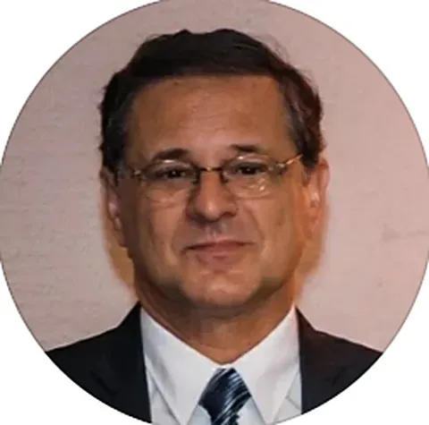

Inventário em Torres e no Litoral Norte, conduzido com experiência e serenidade.
Inventário em cartório ou na Justiça, partilha de bens e testamentos. Há 36 anos, o Dr. Carlos Roberto Thomaz orienta famílias nesse momento delicado, com explicações claras em cada etapa e respeito ao tempo de cada uma. Escritório na Praia da Cal, em Torres, com atendimento presencial ou por videochamada para todo o Litoral Norte e para herdeiros que moram em outras cidades.

advocacia
Perder alguém já é difícil o bastante. O inventário não precisa ser mais uma fonte de angústia para a família.
O papel do advogado é organizar o que parece confuso: reunir documentos, explicar cada decisão em linguagem simples, buscar o caminho mais adequado e conduzir o processo até que cada herdeiro receba, de forma segura, o que lhe cabe.
Inventários em Torres e no Litoral Norte.
Atuação concentrada em inventários e nas questões que surgem em torno deles, da abertura do processo ao registro dos bens em nome dos herdeiros. O escritório também atende Direito de Família, Imóveis e Contratos.
Inventário em cartório e judicial
Inventário extrajudicial, por escritura em cartório, quando há acordo entre os herdeiros, ou judicial, quando o caso exige.
Partilha de bens e ITCD
Divisão de imóveis, veículos, aplicações e demais bens entre cônjuge e herdeiros, com o cálculo e o pagamento do imposto.
Testamentos
Orientação para elaborar um testamento e para o cumprimento de testamentos já existentes.
Herdeiros e direitos do cônjuge
Quem tem direito à herança, a parte garantida por lei aos herdeiros necessários e os direitos do cônjuge ou companheiro.
Cessão de direitos hereditários
Formalização da venda ou transferência da parte da herança de um herdeiro.
Sobrepartilha
Quando um bem aparece depois de o inventário estar encerrado, a sobrepartilha permite incluí-lo e dividi-lo entre os herdeiros.
Além dos inventários, o escritório também atende:
Família
Divórcio, pensão alimentícia e guarda dos filhos.
Imóveis
Compra e venda, usucapião e regularização de imóveis.
Contratos
Elaboração e revisão de contratos, com segurança para as duas partes.
Inventário em cartório ou na Justiça?
Responda a seis perguntas rápidas e veja qual caminho costuma se aplicar à sua família, quanto tempo leva em média e quais são os próximos passos. Leva menos de um minuto e não pede nenhum dado pessoal.
Quais documentos você já tem?
Marque o que já está em mãos. Ao final, você pode enviar a lista do que falta e receber orientação sobre como obter cada documento.
As etapas de um inventário.
Uma visão geral do caminho, do primeiro contato até os bens registrados em nome dos herdeiros. A duração varia conforme cada caso.
Conversa inicial e análise do caso
Entendimento da família, dos bens e da existência de acordo entre os herdeiros, para definir o melhor caminho.
Reunião de documentos e certidões
Levantamento dos documentos pessoais, dos bens e das certidões necessárias.
Avaliação dos bens e cálculo do imposto
Apuração dos valores e do ITCD, o imposto estadual sobre a transmissão por herança.
Pagamento do ITCD
Recolhimento do imposto, condição para a formalização da partilha.
Escritura ou sentença de partilha
Em cartório, a partilha é feita por escritura pública. Na Justiça, por decisão judicial e formal de partilha.
Registro e transferência dos bens
Registro dos imóveis, transferência de veículos e liberação de valores em nome de cada herdeiro.
36 anos dedicados à advocacia.
Ao longo de mais de três décadas de profissão, o Dr. Carlos Roberto Thomaz acompanhou de perto a realidade das famílias gaúchas diante da sucessão patrimonial. Hoje, com escritório em Torres, dedica sua atuação aos inventários e às questões sucessórias de famílias de todo o Litoral Norte.
O atendimento é pessoal e direto: cada família conversa com o próprio advogado, recebe explicações claras e acompanha o andamento do processo do início ao fim. O atendimento pode ser presencial, no escritório na Praia da Cal, ou por videochamada, o que facilita a vida dos herdeiros que moram em outras cidades.
- EXPERIÊNCIA36 anos de advocacia
- DEDICAÇÃOInventários, partilhas e sucessões. Também Família, Imóveis e Contratos
- ATENDIMENTOPresencial ou por videochamada, de segunda a sexta, em horário comercial
- ESCRITÓRIORua Bom Fim, 351/401 · Praia da Cal · Torres/RS
- REGISTROOAB/RS 27.222
Perguntas comuns sobre inventário.
Quanto custa um inventário no RS?+
O custo reúne três partes: o ITCD, imposto estadual sobre a herança; as taxas do cartório (no inventário extrajudicial) ou as custas judiciais; e os honorários do advogado, que têm como referência a tabela da OAB/RS. Os valores dependem dos bens e são apresentados com clareza depois da análise do caso.
Quanto é o ITCD sobre herança no Rio Grande do Sul?+
No RS, o ITCD é calculado sobre a parte que cabe a cada herdeiro, com alíquotas de 0% a 6%, conforme o valor. Partes menores, até 2.000 UPF-RS (cerca de R$ 56 mil em 2026), são isentas. O cálculo é feito sobre a avaliação dos bens, e o imposto pode ser parcelado em algumas situações.
Quanto tempo demora um inventário?+
No cartório, com acordo entre os herdeiros e os documentos em ordem, costuma levar de algumas semanas a poucos meses. Na Justiça, o prazo é maior e pode passar de um ano quando há divergência. Faça o guia interativo para ver o caminho mais provável no seu caso.
Qual é o prazo para abrir o inventário?+
A lei prevê a abertura em até 2 meses após o falecimento (Código de Processo Civil, art. 611). O atraso pode gerar acréscimos sobre o imposto. Mesmo depois do prazo, o inventário pode e deve ser aberto.
Quando o inventário pode ser feito em cartório?+
Quando todos os herdeiros estão de acordo com a partilha e contam com advogado. Se houver testamento, ele precisa antes ser registrado na Justiça, com autorização do juiz para seguir em cartório. O inventário em cartório é chamado de inventário extrajudicial e costuma ser bem mais rápido.
Dá para fazer em cartório se houver herdeiro menor de idade?+
Sim. Desde 2024, a Resolução nº 571 do Conselho Nacional de Justiça admite o inventário em cartório com herdeiros menores ou incapazes, desde que haja acordo, que eles recebam a sua parte em fração de cada bem e que o Ministério Público se manifeste a favor.
Os herdeiros moram em outras cidades. Precisam ir a Torres?+
Não necessariamente. A escritura de inventário pode ser assinada a distância, por videoconferência, pela plataforma oficial e-Notariado dos cartórios. A conversa com o advogado também pode ser por videochamada, e é possível nomear um representante por procuração. É comum no Litoral Norte: imóvel na praia e família espalhada pelo estado ou pelo país.
É obrigatório ter advogado no inventário?+
Sim. Tanto no inventário judicial quanto no feito em cartório, a participação de advogado é obrigatória. Um mesmo advogado pode representar todos os herdeiros quando há acordo entre eles, o que reduz custos.
Posso vender um imóvel antes de terminar o inventário?+
Em regra, o imóvel só pode ser transferido ao comprador depois da partilha. Antes disso, existem caminhos como a cessão de direitos hereditários, feita por escritura, ou o pedido de autorização ao juiz no inventário judicial. Cada situação precisa ser analisada.
A pessoa deixou só dinheiro no banco. Precisa de inventário?+
Depende do valor e do tipo. Saldos de FGTS, PIS/Pasep e valores menores podem ser liberados por alvará judicial, um procedimento mais simples. Valores maiores ou outros bens exigem inventário.
E se um bem for descoberto depois do inventário?+
É possível fazer a sobrepartilha: um procedimento para incluir e dividir bens que ficaram de fora do inventário original.
Quais documentos são necessários para o inventário?+
Documentos da pessoa falecida, do cônjuge e dos herdeiros, dos bens e algumas certidões. Use o checklist interativo para marcar o que já tem e enviar a lista do que falta.
Não encontrou a sua dúvida? Pergunte ao Dr. Carlos Roberto pelo WhatsApp.
Converse diretamente com o advogado.
Explique a sua situação pelo WhatsApp e, se preferir, agende uma conversa presencial ou por videochamada. O retorno é feito pessoalmente pelo Dr. Carlos Roberto Thomaz.
Presencial ou por videochamada
Escritório na Praia da Cal, em Torres.
Rua Bom Fim, 351/401 · Praia da Cal
Torres/RS · CEP 95560-000
Segunda a sexta, em horário comercial. Atendimento presencial ou por videochamada.
Como chegar